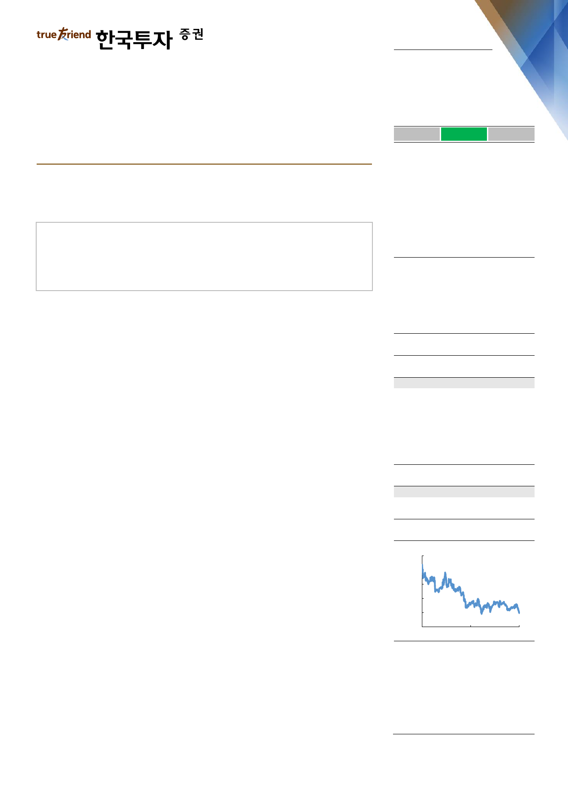

실적 Review
2019. 8. 9
GS(078930)
하 회
부 합
영업이익의 컨센서스 대비를 의미
상 회
반등을 기다릴 때
매수(유지)
영업이익 전년동기대비 11%, 전분기대비 5% 감소
주요 자회사 GS칼텍스 부진이 감익 원인
정제마진 개선과 다가올 IMO에 매력적인 배당수익률을 감안 매수의견 유지
Facts : GS칼텍스 부진으로 감익
영업이익은 전년동기대비 11%, 전분기대비 5% 감소하고 컨센서스는 3% 하회했
다. 영업이익 감소 원인은 주요 자회사인 GS칼텍스의 지분법이익이 전년동기대비
45%, 전분기대비 80% 감소했기 때문이다. 한편, 당사 추정치는 18% 상회했는데,
이는 당사의 GS칼텍스 지분법 적자전환 예상과 달리 흑자를 기록했기 때문이다.
순이익도 당사 추정치를 큰 폭으로 상회했는데, GS칼텍스 흑자로 법인세율이 추정
치보다 5.5%p 낮은 59.1%를 기록했기 때문이다. GS에너지 E&P사업에 대한 높
은 법인세율로(90% 초과) GS칼텍스 실적이 개선되면 GS의 가중평균 법인세율은
낮아진다.
Pros & cons : 낮은 정제마진 가운데 유가까지 하락
GS칼텍스 영업이익은 1,334억원으로 전년동기대비 77%, 전분기대비 60% 감소
했다. 아시아 정제마진이 역사적 저점까지 하락한 가운데 6월달 유가까지 급락했
기 때문이다. 당사 추정치는 9% 상회했는데, 정유와 윤활유부문이 당사 추정치를
각각 100억원가량 상회했기 때문이다. 예상보다 유가하락에 따른 재고평가손실이
크지 않았던 것으로 추정된다. 또한 환손실 등 영업외손실로 순손실 108억원을 예
상했으나, 순이익 476억원을 기록 전분기대비 44% 감소하는데 그쳤다.
Action : 매수 관점 유지
예상보다 견조한 실적을 반영해서 2019년 영업이익 추정치를 4% 상향하고 매수
투자의견을 유지한다. 최근 하락한 유가가 단기 부담요인이나, 원유는 원재료로서
결국 일회성 요인이며 중장기적 관점에서 유가가 낮을수록 긍정적이다. 매수를 권
고하는 이유는 첫째, 정제마진 개선이다. WTI-Dubai 간극 축소에 따른 원가경쟁
력 회복과 타이트한 수급으로 3분기 평균 아시아 스팟 정제마진이 전분기대비
82% 확대되었다. 둘째, 55%의 높은 등경유 비중으로 다가올 IMO 2020 황 규제
수혜도 임박했다. 마지막으로 현재 배당수익률이 4%로 매력적이다. 작년과 동일
한 주당배당금 기준이며 적자를 기록하지 않는 한 주당배당금은 유지 또는 지속적
으로 상향됐다.
목표주가: 82,000원(유지)
Stock Data
KOSPI(8/8)
주가(8/8)
시가총액(십억원)
발행주식수(백만)
52주 최고/최저가(원)
일평균거래대금(6개월, 백만원)
유동주식비율/외국인지분율(%)
주요주주(%) 허창수 외 49 인
국민연금공단
1,921
47,800
4,441
93
55,900/47,300
6,620
51.9/22.6
46.4
10.1
Valuation 지표
PER(x)
PBR(x)
ROE(%)
DY(%)
EV/EBITDA(x)
EPS(원)
BPS(원)
2018A
5.4
0.6
11.1
3.7
6.6
9,539
89,662
2019F
5.6
0.5
9.2
4.0
4.6
8,547
96,389
2020F
3.0
0.4
15.2
4.0
3.3
15,733
110,218
주가상승률
절대주가(%)
KOSPI 대비(%p)
1개월
(7.2)
(0.2)
6개월
(9.6)
2.1
12개월
(10.2)
6.4
주가추이
(원)
80,000
72,000
64,000
56,000
48,000
40,000
Aug-17
자료: FnGuide
Aug-18
Aug-19
이도연
daniel.dy.lee@truefriend.com